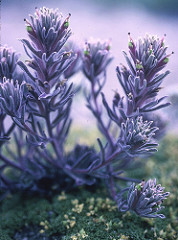

Indian Paintbrush |
||
|
For my 200th Castilleja Set, I wanted to show something special, so I present one of the most elegant of all Paintbrushes, Castilleja nivibractea. The species name means snow-bracted, and this well-describes many of the plants, with shining white upper portions to the floral bracts and the calyces, especially as the inflorescences age. But often the plants range to violet-pink, especially as the inflorescence ages. I have also seen a photo, taken by my friend Gene Hunn, of a yellow-bracted individual of this species. Plants of this color were not present in the extended population I observed. The elevation here is about 10,000 ft., with the summit of Cerro Quixobra, the highest peak in Oaxaca, within a relatively easy climb. This is (or was in 2001) an especially lovely area with a healthy and diverse flora with many endemic and localized species. The Sierras throughout all of Mexico are wonderfully diverse, and I hope many key areas will receive careful and thoughtful management. I also hope ecotourism can continue and expand in Mexico. Castilleja nivibractea was only described in the early 1990's and has been collected only a handful of times. This species and the other facinating plants of this part of Mexico are documented in Gene Hunn's book about the ethnobotany and flora of a local community of Zapotec people: Description by Mark Egger. Mark references: A Zapotec Natural History, University of Arizona Press, 2008. |
For my 200th Castilleja Set, I wanted to show something special, so I present one of the most elegant of all Paintbrushes, Castilleja nivibractea. The species name means snow-bracted, and this well-describes many of the plants, with shining white upper portions to the floral bracts and the calyces, especially as the inflorescences age. But often the plants range to violet-pink, especially as the inflorescence ages. I have also seen a photo, taken by my friend Gene Hunn, of a yellow-bracted individual of this species. Plants of this color were not present in the extended population I observed. The elevation here is about 10,000 ft., with the summit of Cerro Quixobra, the highest peak in Oaxaca, within a relatively easy climb. This is (or was in 2001) an especially lovely area with a healthy and diverse flora with many endemic and localized species. The Sierras throughout all of Mexico are wonderfully diverse, and I hope many key areas will receive careful and thoughtful management. I also hope ecotourism can continue and expand in Mexico. Castilleja nivibractea was only described in the early 1990's and has been collected only a handful of times. This species and the other facinating plants of this part of Mexico are documented in Gene Hunn's book about the ethnobotany and flora of a local community of Zapotec people: Description by Mark Egger. Mark references: A Zapotec Natural History, University of Arizona Press, 2008. |
For my 200th Castilleja Set, I wanted to show something special, so I present one of the most elegant of all Paintbrushes, Castilleja nivibractea. The species name means snow-bracted, and this well-describes many of the plants, with shining white upper portions to the floral bracts and the calyces, especially as the inflorescences age. But often the plants range to violet-pink, especially as the inflorescence ages. I have also seen a photo, taken by my friend Gene Hunn, of a yellow-bracted individual of this species. Plants of this color were not present in the extended population I observed. The elevation here is about 10,000 ft., with the summit of Cerro Quixobra, the highest peak in Oaxaca, within a relatively easy climb. This is (or was in 2001) an especially lovely area with a healthy and diverse flora with many endemic and localized species. The Sierras throughout all of Mexico are wonderfully diverse, and I hope many key areas will receive careful and thoughtful management. I also hope ecotourism can continue and expand in Mexico. Castilleja nivibractea was only described in the early 1990's and has been collected only a handful of times. This species and the other facinating plants of this part of Mexico are documented in Gene Hunn's book about the ethnobotany and flora of a local community of Zapotec people: Description by Mark Egger. Mark references: A Zapotec Natural History, University of Arizona Press, 2008. |